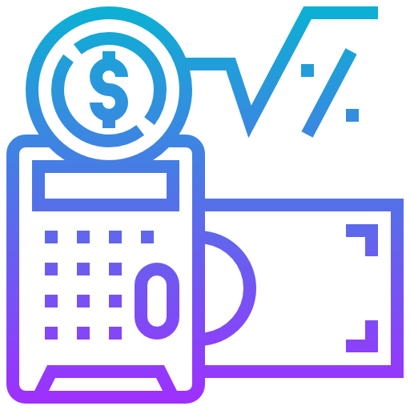

Bond Mutual Funds
Common terms
Year-to-date return (YTD) is simply the amount of profit generated by an investment since the beginning of the current calendar year. It includes interest, dividends, and capital gain (such as an increase in the share price).
Trailing Twelve Months (TTM) Yield provides the recent history of a mutual fund's average dividend and interest payouts to investors. For example, if you are analyzing a fund and you see that it's TTM Yield is 3.00%, it would have paid out $3,000 to an investor that has $100,000 invested in the mutual fund during the previous year.
Net asset value (NAV) is the value of a fund's asset less the value of its liabilities per unit $$x = {(Value of Assets-Value of Liabilities) \over number\;of\;units\;outstanding}.$$ NAV is often associated with mutual funds, and helps an investor determine if the fund is overvalued or undervalued.
What Are Municipal Bond Funds?
Municipal bonds (or “munis” for short) are debt securities issued by states, cities, counties and other governmental entities to fund day-to-day obligations and to finance capital projects such as building schools, highways or sewer systems.
Municipal bond funds are mutual funds that invest in municipal bonds.
 Taxation of Municipal Bond Funds
Under present federal income tax law, the interest income you receive from investing in municipal bonds is free from federal income taxes. In most states, interest income received from securities issued by governmental units within the state is also exempt from state and local taxes.
Buying the bonds of another state, their home state may tax their interest income from the bond. While interest income is usually tax-exempt for municipal bonds, capital gains realized from selling a bond are subject to federal and state taxes.
Difference Between Bonds and Bond Mutual Funds
Bonds are debt obligations issued by entities, like companies or governments. When you buy an individual bond, you're primarily disposal your cash to the entity for a declared amount of your time. In exchange for your loan, the entity will pay you interest until the end of the period (the maturity date) when you will receive the original investment or loan amount (the principal).
Bond types are classified by the bond issuing entity.
Bond funds are mutual funds in which bonds are invested. In other words, a bond fund can be regarded as a basket of dozens or hundreds of bonds (holdings) within a bond portfolio. Most bond funds include a certain type of bond, such as corporate or government bonds, and further defined by time period to maturity, such as short-term (less than 3 years), intermediate-term (3 to 10 years) and long-term (10 years or more).
When to Buy Bonds, When to Buy Bond Mutual Funds
- Interest rates rises --> Buy Individual bonds
- Interest rates declines (and thus bond prices are rising) --> Buy Bond mutual funds
Who Should Invest in Municipal Bond Funds and Why?
Investors who should use municipal bond funds are primarily those who want to earn yields that are typically higher than that of money market funds and who may be in high tax brackets. Also, the interest paid is generally exempt from federal and states income taxes.
Tips about buying mutual funds
- Identify goals and risk tolerance.
- Be cautious of high fee funds (Hidden costs of mutual funds).
- Buy funds with embedded capital gains (If you want to sell your bond).
- Look at the funds before buying them (Maybe all the funds own the same type of stock or the same type of bond).
- Consider a tax-deferred retirement accounts and stock index funds for non-retirement accounts.
- May not be good for investing as a Source of Retirement Income (Increase in taxation of Social Security benefits, Increase in Medicare premiums, etc.…).